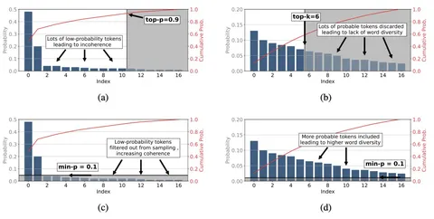
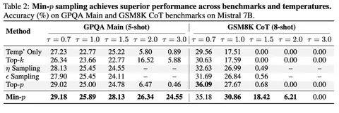

Min-p — метод семплирования, который, по словам его создателей, позволяет найти баланс между креативностью и связностью ответов. Сегодня разберём статью с описанием этого подхода.
При использовании отсекающего семплирования вроде top-p или top-k, на каждом шаге генерации после отсечения может всё ещё оставаться ненужный нам «хвост» из маловероятных токенов. Это приводит к тому, что вероятность допустить ошибку на следующем шаге генерации — не нулевая. А токен — не воробей, вылетит — не поймаешь. Из-за этого может пострадать весь ответ.
Это происходит потому что top-p и top-k предполагают применение жёсткого порога отсечения, который никак не зависит от шага генерации и уверенности модели в следующем токене. А подобрать универсальный порог на все случаи жизни невозможно.
Метод Min-p пытается решить эту проблему с помощью динамической настройки порога в зависимости от токена с самой высокой вероятностью. Если модель уверена в токене, то порог обрезки будет высокий. Если сомневается — то из распределения возьмётся больше токенов.
Как это работает:
1. выбирается токен с наибольшей вероятностью — Pmax;
2. гиперпараметр метода — базовый порог вероятности, Pbase (авторы рекомендуют выбирать между 0,05 и 0,1) — умножается на Pmax, и получается порог отсечки — Pscaled. По нему отсекаются токены, всё, что ниже, выкидывается;
3.формируется пул для семплирования из оставшихся токенов;
4. вероятности нормализуются.
Получается, что на каждом шаге генерации порог отсечки может меняться. При этом ресурсозатраты метода не намного выше, чем у Top-p.
Преимущество Min-p в том, что этот метод подходит для разных температур — даже при высоком значении в 3-5. Важный момент: температура должна применяться после Min-p. Авторы не рекомендуют использовать Min-p с другими методами семплирования, хотя они и могут сочетаться.
Авторы тестировали метод на Mistral 7B в трёх бенчмарках: GPQA Main, GSM8K CoT — которые проверяют конкретные знания — и AlpacaEval Creative Writing. На первых двух бенчмарках Min-p может показывать результаты чуть хуже, чем Top-p при низких температурах. Зато в AlpacaEval Creative Writing, где осуществляется SbS-сравнение на креативных задачах, он строго лучше.
Разбор подготовил
Душный NLP
